Stratégie automatique de trading en finance#
Une stratégie automatique de trading désigne un algorithme qui propose voire prend des décisions de trading. Le rôle du trader consiste alors à concevoir et améliorer constamment son algorithme. Ce scénario est rendu possible grâce à l’évolution rapide des moyens informatiques qui vont jusqu’à utiliser des connexions internet ultra rapide (lire Verizon Creates High-Speed Direct Trading Route From Aurora to New York Metro Financial Markets for CME Group). Ces techniques étaient plutôt la spécialité de certains Hedge Funds (c’est le cas de Renaissance). mais elles sont de plus en plus répandues. Il va de soi qu’un tel système de trading automatique doit être réalisé avec le plus grand soin car les erreurs de conception ou les bugs ont un impact immédiat en terme financier. Cet automatisme extrême est impératif dans le cas de stratégie de type High Frequency Trading qui réagissent en temps réel à la moindre variation des cours. Pour des stratégies à plus long terme, les algorithmes ne sont pas toujours directement reliés aux marchés, ils génèrent des listes d’ordres qui sont effectués manuellement par un trader ou servent d’outils d’aide à la décision. Plus la fréquence des opérations est élevée, plus l’investissement nécessaire à leur mise en place est important.
Quelques références#
En pratique, l’efficacité d’une stratégie est souvent limitée dans le temps, il faut sans cesse améliorer les stratégies existantes et en imaginer d’autres. Les paragraphes qui suivent donne une première idée de ce en quoi consiste la construction d’un tel algorithme. Il existe un grand nombre de livres décrivant le monde de la finance, cette partie succinte ne prétend pas en donner un reflet exhaustif, elle s’intéresse à un aspect en particulier qui est celui du trading automatique. Un livre est considéré comme la bible en finance, il s’agit de Options Futures et autres actifs dérivés de John Hull ([Hull2011]). Le livre La finance quantitative en 50 questions de Paul Wilmott ([Wilmott2008]) aborde cinquante thèmes ou questions récurrentes en finance. Ce second livre se conclut par des conseils concernant la rédaction d’un CV ou des questions types utilisées lors des entretiens pour tester la vivacité d’esprit des candidats. Un autre livre autour des Hedge Funds intitulé Hedge funds, private equity, marchés financiers les frères ennemis ? par Bertrand Jacquillat ([Jacquillat2008]), c’est un recueil d’articles autour de l’utilité des Hedge Funds au sein du système économique et financier mondial, l’un d’eux se penche sur des moyens de mieux réguler leur activité pour l’instant peu contrainte. Un tiers des Hedge Fund en 2007 était établi dans les Iles Caymans. Je citerai également deux autres livres concernant les Hedge Funds. Le premier [RocchiChristiaens2007] décrit les différents style de gestion des Hedge Funds, il revient également sur les personnalités qui ont marqué l’histoire des Hedge Funds. Le second [Henry2008] aborde les mêmes thèmes mais est mieux structuré.
Ayant quitté la finance en 2007, je connais peu de références récentes qui auraient pu aborder la crise des subprimes. La démarche décrite ici est toujours valable mais des livres récents seraient plus précis à propos des évolutions informatiques et des indicateurs intéressants à surveiller en temps de crise. Ce qui a changé : la part croissante de l’informatique et des algorithmes de trading, la vitesse des communication.
Le site Kaggle propose quelques compétitions de trading comme : Two Sigma Financial Modeling Challenge ou The Winton Stock Market Challenge mais surtout certains participants explicitent les idées qu’ils ont développés pour obtenir leurs résultats. C’est le cas de cet article Two Sigma Financial Modeling Challenge, Winner’s Interview: 2nd Place, Nima Shahbazi, Chahhou Mohamed qui permet de découvrir les indicateurs utilisés par ce participant arrivé en seconde position. Certains sont moins diserts Winton Stock Market Challenge, Winner’s Interview: 3rd place, Mendrika Ramarlina, d’autres publient sur leurs propres blog Kaggle Winton Stock Market Challenge - Post-Mortem.
Vocabulaire financier#
Marchés liquides#
Les algorithmes de trading sont de préférence utilisés sur des marchers financiers liquides et sur des produits standards tels que les actions, les Futures, les devises ou encore les taux d’intéret. Des produits simples et liquides limitent considérablement les contraintes associées à leur trading. L’algorithme en sera d’autant moins compliqué à concevoir et à surveiller.
Les Futures sont des produits financiers reliés à un sous-jacent qui ne sera échangé entre le vendeur et l’acheteur qu’à une date ultérieure qu’on appelle maturité. Lorsqu’on achète un produit Future sur du pétrole par exemple, on s’engage en fait à acheter ce dit pétrole à une date fixée par le contrat. Au moment de la transaction, il n’est pas nécessaire d’avoir effectivement l’argent, on pourra toujours clore ce contract avant d’avoir à acheter réellement le pétrole. A cause de la spéculation financière, il y a bien plus de contrats ouverts que de pétrole disponible.
Parier sur une devise, c’est parier son évolution par rapport à une autre devise, par exemple, le cours Euro/Dollars. Les taux d’intérêt ne sont pas les mêmes d’un pays à l’autre, ces taux ne sont pas non plus constants dans le temps.
La liquidité est une caractéristique essentielle, elle détermine la facilité avec laquelle on peut vendre et acheter un produit financier. On fait souvent la distinction entre big cap, mid cap, small cap., c’est-à-dire les grandes capitalisations boursières, les moyennes et les petites. Sur le secteur des small cap, il n’est pas toujours possible de trouver un acheteur ou un vendeur pour une action donnée. Cela ne veut pas dire que le prix de cette action est momentanément nul, cela signifie que, momentanément, il n’existe personne sur le marché pour échanger. La liquidité n’est pas une caractéristique constante, il peut arriver qu’un marché soit liquide la plupart du temps et qu’il ne le soit plus en temps de crise.
Description d’une série financière#
Une série financière ne se résume pas à une série de prix. Pour une série quotidienne, on dispose d’autres informations comme le premier prix de la journée Open, le dernier prix Close, le plus haut prix High et le plus bas Low. Une autre information importante est le volume de transactions. La figure suivante représente toutes ces informations sur un seul graphique pour une vingtaine de jours.
Figure F1 : Open-High-Low-Close-Volume
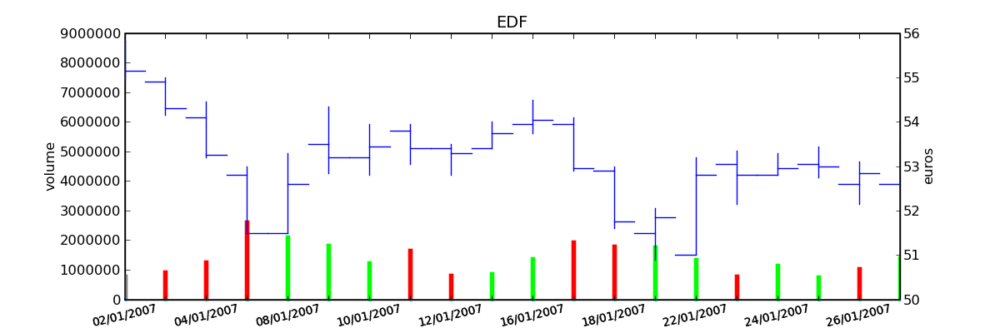Graphe Open-High-Low-Close-Volume d’une série financière. Les histogrammes représentant les les volumes, vert pour journée positive, rouge pour une journée négative. Chaque barre verticale relie les prix Low et High d’une même journée, les barres horizontales sont les prix Open à gauche et Close à droite.
Cette représentation est valable quelque soit la période de la série, que ce soit un jour, cinq minutes, il existe toujours quatre prix, Open High Low Close. Ces mêmes données sur des périodes de cinq minutes peuvent être utilisées pour faire du trading intraday : le trader quitte toutes ses positions chaque soir et ne s’intéresse qu’aux variations des prix au sein d’une même journée. La figure suivante représente deux jours d’une telle série. Ce graphe montre que le volume de transactions n’est pas constant, il est souvent élevé lorsque marchés européens et américains sont ouverts ensemble, il est également très élevé lorsque les acteurs du marchés attendent une information financière comme l’annonce d’une baisse des taux ou l’indice de satisfaction des ménages américains.
Il faut prendre le temps de regarder plusieurs séries financières, de comprendre un peu mieux ce qu’est l’analyse technique d’uen série via Leçons d’analyse technique. Après seulement, on peut envisager les algorithmes de trading.
Figure F2 : OHLC Intraday
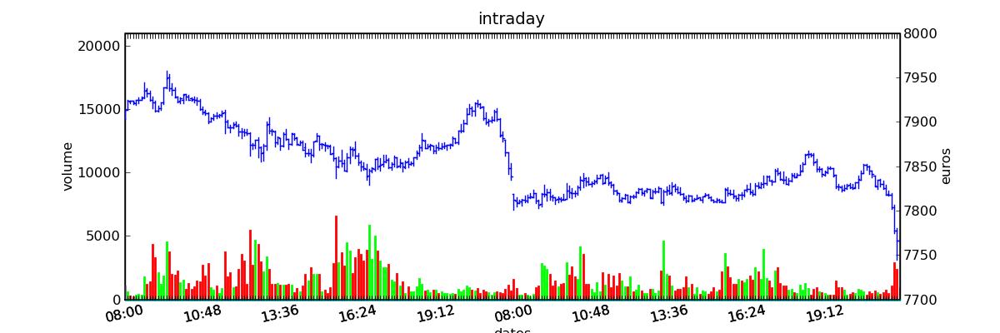Graphe Open-High-Low-Close-Volume d’une série financière intraday. Les volumes représentés ici sont ceux d’une série européenne, il y a une première vague avant midi, juste avant la pause déjeuner, il y a une seconde vague qui correspond à l’ouverture des marchés américains. Certaines statistiques américaines tombe parfois à 13h30 heure française et ont un fort impact très localisé dans le temps sur les séries financières les plus traitées.}
Certains organismes financiers bâtissent des stratégies qui nécessitent des données encore plus précises qu’on appelle données tick by tick. Un tick est un ordre exécuté, il correspond à une quantité et un prix, ce prix est la valeur de l’action jusqu’au prochain tick. Ainsi les quatre prix Open High Low Close sur une période sont calculés à partir des données tick by tick. Ces données sont très volumineuses et nécessitent des systèmes informatiques spécialisés. Elles sont aussi bruitées, il arrive parfois qu’un ordre passé à un temps ne soit répercuté dans la série que plus tard.
On associe souvent aux données tick by tick les carnets d’ordres : ce sont les intentions de chaque acteur du marché, elles sont classées par prix croissants pour les intentions de vente et décroissants pour les intentions d’achat. Une donnée souvent mesurée est l’écart entre le prix de vente le plus bas et le prix d’achat le plus haut qu’on appelle bid-offer spread. Cette différence est positive. Le prix d’une action n’évolue pas de manière continue, il ne peut augmenter ou diminuer que d’un nombre entier de ticks. Fournir des données financières nettoyées est un service qui se vend assez cher et qui sert principalement à l”hyper trading. En agissant suffisamment vite (100 millisecondes pour aller retour bourse-banque-bourse), il est possible de placer un ordre à un prix qui assure son exécution.
Figure F3 : Exemple de carnet d’ordres, tous les ordres ne sont pas représentés.
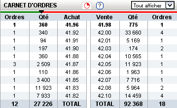Rendements, Volatilité, Corrélation#
Le CAC 40 a perdu 0,2% aujourd’hui, -0,2% est le rendement du CAC 40 sur cette journée. Si on définit une série ou quotidienne ou daily par , le rendement journalier est défini par :
Les logarithmes se manipulent assez bien puisque un rendement annuel devient la somme des rendements quotidiens. Ce dernier n’est souvent pas très représentatif, on préfère un rendement annualisé. Comme il y a environ jours de trading par an, le rendement annualisé devient :
Un rendement annuel de 10% correspondant à un rendement journalier moyen de 0,045%. Un rendement de 10% par an est un excellent rendement mais il est intéressant de savoir si ce résultat a été obtenu de façon graduelle tout au long de l’année ou si c’était plutôt par à coup. C’est ce que tente de mesurer la volatilité d’une série : c’est l’écart-type des rendements.
Cette volatilité est quotidienne ou daily, là encore, on préfère parler de volatilité annualisée. Le rendement annuel est la somme des rendements quotidiens, on suppose que ceux-ci sont tous indépendants les uns des autres et identiquement distribués, par conséquent :
Un dernier indicateur souvent utilisée est l’indice de corrélation entre deux séries. Lorsqu’on compare deux séries financières issues du même secteur (Société Générale et BNP par exemple), il est fort probable que ces deux séries réagissent de manière similaire à des événements économiques relatifs au secteur bancaire. Pour mesurer la proximité entre ces deux séries, on utilise la corrélation entre rendements :
Cet indicateur est compris dans l’intervalle . Il est souvent calculé sur la dernière année écoulée, il exprime la proximité de deux séries financières. Investir sur deux actions fortement corrélées revient à investir le double sur une seule des deux puisque les rendements sont sensiblement les mêmes.
Ces indicateurs sont des moyennes, ils peuvent être estimés sur des périodes plus ou moins longues, sur des périodes glissantes mais de par leur nature, ils sont peu sensibles aux variations courtes.
Moyenne mobile, bandes de Bollinger#
La moyenne mobile est un indicateur couramment utilisé
car il permet de mieux visualiser la tendance d’une
courbe financière en gommant les variations quotidiennes.
Cette moyenne est simplement la moyenne des dernières
valeurs passées. On définit l’indicateur
(MA pour Moving Average en anglais)
à la date la moyenne mobile  par :
par :
Cette moyenne est décentrée car elle ne tient compte que des valeurs passées, on dit souvent que la moyenne est en retard par rapport à la série elle-même. Cet indicateur permet de dégager une tendance mais prévoit toujours avec retard un changement de tendance.
La figure moyenne mobile représente le cours d’une action à côté de sa moyenne mobile. Cet indicateur est couramment accompagnée des bandes de Bollinger qui enserrent la série financière dans une sorte de tube. On définit tout d’abord la distance moyenne entre la série et sa moyenne :
Les bandes de Bollinger sont définies par l’intervale
où
 est un paramètre qui détermine la largeur du couloir.
Le fait que la série sorte de ce couloir indique un jour de plus forte variation.
est un paramètre qui détermine la largeur du couloir.
Le fait que la série sorte de ce couloir indique un jour de plus forte variation.
De nombreux autres indicateurs sont utilisés par les traders au cours de leur analyse technique. Le tableau suivant en reprend quelques-uns. On note par les quatre prix Open High Low Close pour la période .
Indicateur |
Description |
|---|---|
moyenne mobile exponentielle |
C’est une moyenne mobile qui accorde plus de poids aux valeurs récentes.
Elle est définie par un paramètre.
|
True Range |
Il est défini par . Il donne une estimation différente des variations opérées par une série financière durant la période. L’indicateur $TR_t$ permet de prendre en compte la variabilité intra-période (intraday si les périodes sont des jours). Rapporté à la série elle-même, c’est une mesure semblable à la volatilité mais beaucoup plus réactive puisque ce n’est pas une moyenne. Average true range |
Cet indicateur sert à détecter les changements de tendance en calculant la différence entre deux moyennes mobiles d’horizons différents : . Un changement de signe indique un changement de tendance. Pour un trading daily, les horizons sont souvent choisis dans l’ensemble . En pratique, l’indicateur utilisé n’est pas directement le MACD. mais une moyenne mobile de celui-ci. |
|
Parabolic SAR (Stop And Reverse) |
Cet indicateur cherche à détecter les tendances, il est défini par :
.
|
Cet indicateur sert à comparer les forces des mouvements
baissiers et haussiers. On définit tout
d’abord les deux séries et
.
On définit ensuite
et comme étant les moyennes mobiles
exponentielles des séries et .
On définit l’indicateur
|
 .
Enfin, l’indicateur .
.
Enfin, l’indicateur .Achats, ventes, levier#
Il n’est pas nécessaire de posséder une action pour la vendre. Au sein d’une banque ou d’un Hedge Fund, il est possible de vendre une action puis la racheter (on peut emprunter l’action au broker). Néanmoins, la régulation de certains pays interdit la vente à découvert. Ce système permet d“« attraper » les tendances baissières. Il suffit de vendre au moment où la baisse commence puis d’acheter lorsque celle-ci s’arrête.
Un terme revient fréquement lorsqu’on parle de finance, il s’agit du levier. A priori, avec un fond de 100, il est possible d’acheter pour 100 d’actions. En empruntant 100 de plus, il est alors possible d’acheter pour 200 d’actions. On dit que le levier est de 200% ou que la stratégie est leveragée deux fois. C’est un anglicisme couramment utilisé pour désigner un fort levier. Cette pratique est particulièrement intéressante lorsque la performance du Hedge Fund est bien supérieure au taux de l’emprunt. Ces sociétés ont pris beaucoup d’essort entre 2001 et 2007, favorisés par la politique de taux bas (< 2%) pratiqués par Banque Fédérale Américaine. Le danger apparaît en temps de crise, un fort levier implique des pertes possibles beaucoup plus grandes. Le livre [Jacquillat2008] ouvre une discussion quant à la responsabilité des Hedge Funds durant la crise des subprimes.
Hedge Funds#
Les Hedge Funds proposent ce qu’on appelle une gestion alternative de fonds. Ils proposent des rendements en moyenne de 10% par an avec une part de risque un peu plus importante. en 2007, ils étaient majoritairement basés aux Iles Cayman et aux Etats-Unis (voir ci-dessous), ils favorisent des placements à très courts termes (quelques mois) et sont fortement leveragés.
Table T1 : Implantation des Hedge Funds en 2007
Implantation des Hedge Funds de par le monde et répartition selon les différentes stratégies de trading. Source Lipper Mars 2007, extrait de [Jacquillat2008].
Lieu |
Répartition |
|---|---|
Iles Cayman |
34 % |
USA |
20 % |
British Virgin Islands |
14 % |
Bermudes |
5 % |
Luxembourg |
5 % |
France |
4 % |
Irlande |
3 % |
Bahamas |
3 % |
Guernsey |
2 % |
Antilles Néerlandaises |
2 % |
Stratégie |
Répartition |
|---|---|
Multi=stratégie |
31% |
Long / Short Equity |
23% |
Event Driven |
13% |
Commodity Trading Advisor (CTA) |
6% |
Fixed Income Arbitrage |
5% |
Emerging Markets |
4% |
Global Macro |
4% |
Equity Market Neutral |
4% |
La description des autres stratégies s’appuie sur le livre [RocchiChristiaens2007]. Un fond peut éventuellement investir dans d’autres fonds.
La stratégie Long / Short Equity regroupe les stratégies qui prennent des positions à la fois vendeuses et acheteuses sur des actions. Le pair trading est d’ailleurs l’une d’entre elles. Les prises de positions peuvent s’étendre sur différents secteurs économiques. Pour éviter une trop grande exposition et réduire les risques de pertes, les gérants font parfois en sorte que la somme des positions acheteuses soit équivalente à celle des positions vendeuses pour chaque secteur. Ce cas particulier s’appelle Equity Market Neutral.
La stratégie Event Driven se focalise sur les sociétés dont l’actualité est mouvementée avec un fort impact sur le cours de ses actions. Les gérants de ce type de fonds essayent d’anticiper des événements ayant trait à une société particulière comme une fusion ou une acquisition, une offre publique d’achat (OPA). L’annonce des retards de livraison de l’avion A380 rentre dans cette catégorie. La réussite nécessite une bonne connaissance de l’histoire des sociétés dont on souhaite acheter ou vendre les actions, de se pencher sur leur bilan financier.
La stratégie Commodity Trading Advisor ou tout simplement CTA s’applique à des produits Futures comme les Futures sur les matières premières ou Commodities. C’est le domaine de prédilection des fonds systématiques qui utilisent des algorithmes de trading automatique (voir paragraphe Familles de stratégies). Les Futures sont des produits très liquides qui concernent aussi bien le pétrole que le blé ou l’or, les indices comme le CAC40. Un Future est la promesse d’échanger un produit à une date donnée appelée maturité. Par exemple, le Brent Crude Oil côté sur le New-York Merchantile Exchange (NYMEX) est un produit Future dont il existe une maturité par mois. Le café n’est échangé que tous les trois mois. Lorsqu’un Hedge Fund achète un Future Brent Crude Oil Aug08, il prend l’engagement d’acheter du pétrole à la fin du mois d’août 2008, il ne paiera qu’à cette date. Cette affirmation n’est pas complètement vraie, pour éviter qu’un investisseur ne fasse défaut, il est tenu de verser une somme forfaitaire (un appel de marge) à la chambre des compensations, il doit compléter cette somme dès que le prix du Future s’écarte par paliers du prix initial. Les Hedge Funds n’achètent bien entendu jamais de pétrole, lorsque la fin du mois d’août arrive, ils vendent ce produit pour acheter celui correspondant à la maturité suivante (en anglais roll over). Avec ce système, il n’y a pas besoin d’emprunter, une position vendeuse est aussi facile à prendre qu’une position acheteuse puisque rien n’est échangé avant la date de maturité.
La stratégie Fixed Income Arbitrage concerne les taux d’intérêt. Lorsque l’argent est prêté, le taux d’intérêt dépend de la durée. Cette stratégie consiste à jouer avec ces taux, à parier sur leur évolution.
La stratégie Global Macro nécessite d’excellentes connaissances en économie car il s’agit de prendre des paris sur l’évolution à court terme de l’économie mondiale. Anticiper la hausse du prix du pétrole en fait partie, comme parier sur l’évolution des taux d’intérêts américains et européens ou prévoir la croissance de l’ensemble d’un secteur économique.
Le terme Hedge signifie se couvrir, se couvrir contre un pari trop risqué comme prendre des positions inversées sur des produits similaires, acheter ou vendre des options.
Une option est un produit financier qui permet d’assurer l’acheteur de cette option contre une variation des prix. L’acheteur d’une option achète le droit d’acheter ou de vendre une action à un prix donné et à une date donnée. L’acheteur peut ou non exercer son droit d’acheter ou de vendre. Par exemple, un acteur achète une option qui lui confère le droit d’acheter dans un mois une action à 110 euros sachant qu’elle est à 100 aujourd’hui. Si au bout d’un mois, l’action est à 120, l’acheteur exercera son option, son bénéfice sera de 10 moins le prix de l’option, dans le cas contraire, il n’exercera pas son option, il ne paiera que le prix de l’option. Les termes call et put sont couramment utilisés pour désigner les options. Un call est le droit d’acheter, un put est le droit de vendre.
Les investisseurs qui souhaitent investir dans un Hedge Funds regardent son track record qui désigne sa performance passée, sa capacité à afficher des rendements positifs chaque année, synonyme d’une bonne gestion. L’investisseur regarde aussi la volatilité de la performance, lorsqu’elle est élevée, l’incertitude sur la performance est plus grande. L’investisseur regarde également la corrélation avec le marché, le Hedge Fund est un placement risqué, une bonne gestion signifie aussi une volatilité contenue et une absence de corrélation avec le marché afin d’être moins sensible aux crises du marché.
Familles de stratégies#
Les paragraphes qui suivent présentent différentes stratégies qui cherchent à capter chacune un aspect particulier d’une série financière. Ces stratégies s’appuient principalement sur des informations numériques calculées à partir des données numériques elles-mêmes (Open High Low Close Volume). Une exception pourtant : les stratégies de type style s’appliquent aux actions et utilisent d’autres informations relatives à la société émettrice de ses actions comme le chiffre d’affaire et tout autre chiffre extrait de leur bilan financier.
Il n’existe pas de meilleures stratégies, il est rare qu’une stratégie soit efficace sur tous les secteurs économique ou sur tous les types de produits, action, pétrole, indices, taux, … Il est rare qu’une stratégie soit tout le temps performante, il est toujours préférable de constuire un système en utilisant plusieurs, la volatilité est moins élevée.
Il n’est pas simple d’intégrer dans des systèmes automatiques des informations quantitatives relatives aux informations économiques comme l’annonce d’un plan de licenciement, des retards dans les livraisons d’avions, une nouvelle dépréciations d’actifs. Outre la complexité qu’entraînerait la prise en compte des telles informations, un argument qui justifie la seule utilisation de l’analyse technique est l’efficience des marchés : les nouvelles économiques sont prises en compte par les prix eux-mêmes qui sont la résultante des ordres passés sur le marché. Les marchés financiers corrigent d’eux-mêmes les prix car ils intègrent toute l’information connue.
Une stratégie s’intéresse avant tout à un comportement moyen. Une moyenne mobile ne peut pas prendre en compte un jour de trading aberrant, une journée de crise, une stratégie cherche avant tout à profiter d’un comportement récurrent d’une série telle qu’une tendance et doit faire l’impasse sur des comportements erratiques et passagers. Ces derniers ne sont pas assez fréquents pour être étudiés, ils sont à chaque fois différents et leur compréhension dépasse le cadre de l’analyse technique.
Trend Following#
Le Trend Following consiste à suivre une tendance qu’elle soit haussière ou baissière. Une simple stratégie de Trend Following est illustrée par la figure qui suit. Ce type de stratégie parie sur le long terme, le temps nécessaire pour qu’une tendance se forme et dure. On parle parfois d’attraper une tendance : la stratégie prend plusieurs fois de mauvaises décisions et décide de couper sa position peu de temps après, de temps en temps, la décision est bonne et la pose est gardée le plus longtemps possible, jusqu’à ce que la tendance prenne fin.
On parle de position ou pose pour une quantité négative ou positive d’actions. Couper sa pose consiste à annuler sa position : tout vendre si on possédait des actions ou tout acheter si la position était négative. Après avoir coupé sa position, le portefeuille n’est plus constitué que d’argent.
Figure F4 : Action BNP et Trend Following
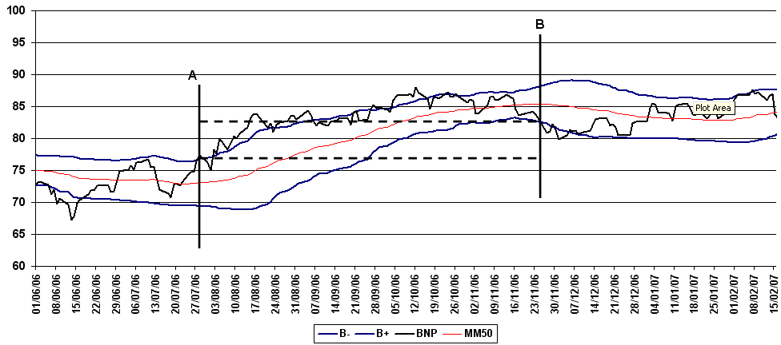Cours de l’action textit{BNP} accompagné par sa moyenne mobile 50 et ses bandes de Bollinger. Une stratégie simple de trend following consiste à acheter lorsque le cours dépasse sa bande supérieure de Bollinger (point A) et à revendre lorsque le cours passe sa bande inférieure (point B). Le gain est alors la différence des cours d’achat et de vente. Lorsque la tendance est baissière, il suffit de vendre d’abord puis d’acheter ensuite.
Cette stratégie prend une position acheteuse ou long lorsque la tendance est haussière et vendeuse ou short lorsque la tendance est baissière. Ce type de stratégie est averse au changement de tendance qu’elle détecte avec retard, car cette stratégie ne s’appuie que sur des moyennes mobiles. Plus généralement, lorsque la volatilité est grande, ce type de stratégie est déconseillée, il est préférable d’utiliser le Mean Reversing.
Concevoir un indicateur de tendance n’est pas chose facile. Même si l’oeil humain est habitué à analyser des courbes financières, il n’en est pas de même pour un algorithme qui fait face aux effets de seuil. La stratégie décrite par la figure BNP prend des décisions lorsque sa courbe touche une de ses bandes de Bollinger. Un expert humain pourra prendre une décision si la distance entre la courbe et la bande est petite visuellement, un ordinateur a besoin de seuils constants pour prendre sa décision qui est binaire. On pourrait modifier la largeur de la bande de Bollinger mais la stratégie est souvent très sensible à cette largeur. Ce point sera évoqué plus loin au paragraphe Analyse d’une stratégie.
Un autre facteur est la longueur de la tendance. La stratégie toujours décrite par la table sur les statistiques classiques s’appuie sur une moyenne mobile de 50 jours. Elle détecte bien les tendances dont la longueur se situe autour de cette valeur mais elle est susceptible de prendre de mauvaises valeurs si la tendance est plus courte ou si une trentaine de jours assez volatiles s’immiscent au sein d’une tendance longue de plusieurs mois.
En pratique, la stratégie est munie de quelques mécanismes qui
permettent de limiter les pertes. Lorsque la stratégie achète une action
à un prix  si le prix descend en dessous d’un seuil
égal à alors la position est coupée. La position est
coupée si le prix passe au-dessus du seuil
dans le cas d’une position vendeuse. Ce système permet de limiter
les pertes de la stratégie, il est souvent présent dans
les stratégies qui suivent avec le même objectif :
réduire le risque. Les marchés ont d’ailleurs intégrer
ces mécanismes avec les stop order.
Ce n’est plus le trader qui coupe sa pose mais la bourse elle-même.s
si le prix descend en dessous d’un seuil
égal à alors la position est coupée. La position est
coupée si le prix passe au-dessus du seuil
dans le cas d’une position vendeuse. Ce système permet de limiter
les pertes de la stratégie, il est souvent présent dans
les stratégies qui suivent avec le même objectif :
réduire le risque. Les marchés ont d’ailleurs intégrer
ces mécanismes avec les stop order.
Ce n’est plus le trader qui coupe sa pose mais la bourse elle-même.s
Cette règle peut encore être améliorée lorsque la stratégie est gagnante depuis un certain temps, cette règle propose de stopper la stratégie à un niveau loin de son niveau actuel. Dans ce cas, on rapproche de temps en temps le niveau auquel la position est coupée pour éviter des pertes trop importantes. On rapproche le niveau de stop. Dans le même ordre d’idée, on peut décider de couper sa pose parfois lorsque la courbe s’éloigne beaucoup de sa moyenne mobile et que la position est gagnante : c’est prendre ses profits avant que ceux-ci ne diminuent.
Mean Reversing ou Mean Reversion#
Le mean reversing stratégie s’intéresse aux périodes durant lesquelles la volatilité est élevée et où aucune tendance ne se dégage. Cela suppose que le cours de l’action va osciller autour d’une position d’équilibre et que la meilleure stratégie à suivre est d’acheter lorsque le cours vient de baisser et de vendre lorsque le cours vient de monter.
En terme de décision, cette stratégie prend beaucoup de poses, les garde peu de temps et celles-ci sont souvent gagnantes. La stratégie commence à perdre lorsque la période de haute volatilité laisse place à une nouvelle tendance. Cette situation est mal gérée par cette stratégie qui se retrouve avec une position inverse à celle qu’elle aurait dû prendre.
Figure F5 : Action BNP et Mean Reversing
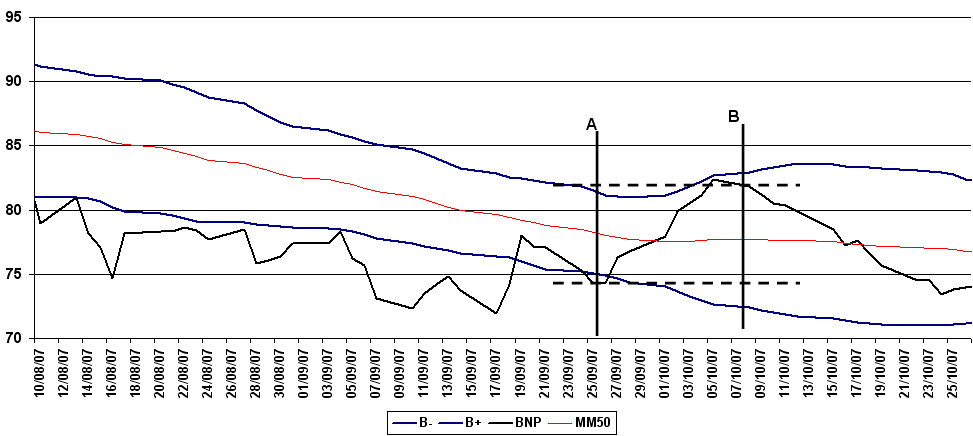Cours de l’action textit{BNP} accompagné par sa moyenne mobile 50 et ses bandes de Bollinger. Une stratégie simple de mean reversing consiste à acheter lorsque le cours dépasse sa bande inférieure de Bollinger (point A) et à revendre lorsque le cours revient vers sa borne supérieure (point B). Le gain est alors la différence des cours d’achat et de vente.
Le terme Contrarian apparaît parfois pour désigner cette stratégie. Ce terme désigne une stratégie dont les positions prises sont inverses au consensus suivi par le marché. Toutefois, la stratégie est souvent munie d’un mécanisme limitant les pertes tel que celui décrit au paragraphe Trend Following.
Pair Trading#
Le pair trading consiste à construire un portefeuille de deux actions. On étudie dans ce cas la série du rapport des prix des deux actions. On choisit le plus souvent deux actions appartenant au même secteur économique (BNP, Société Générale par exemple) de façon à obtenir une série moins sensible aux événements économiques. En cas de crise ou de rebond du secteur, les deux actions sont toutes deux susceptibles d’être atteintes, le rapport des prix ne dépend plus que des différences des deux sociétés. Ce procédé permet de construire une série moins sensible aux tendances qui s’appliquent à un secteur dans son ensemble.
Les stratégies appliquées à ce rapport de prix sont plutôt de type mean reversing, on s’attend à ce que temporairement le rapport des prix s’écarte de sa moyenne puis y reviennent. La différence intervient lors de la prise de décision, au lieu d’acheter ou de vendre une action, prendre une position consiste à acheter une action et vendre l’autre, quitter la position revient à effectuer la manipulation inverse.
Figure F6 : Action BNP et pair trading
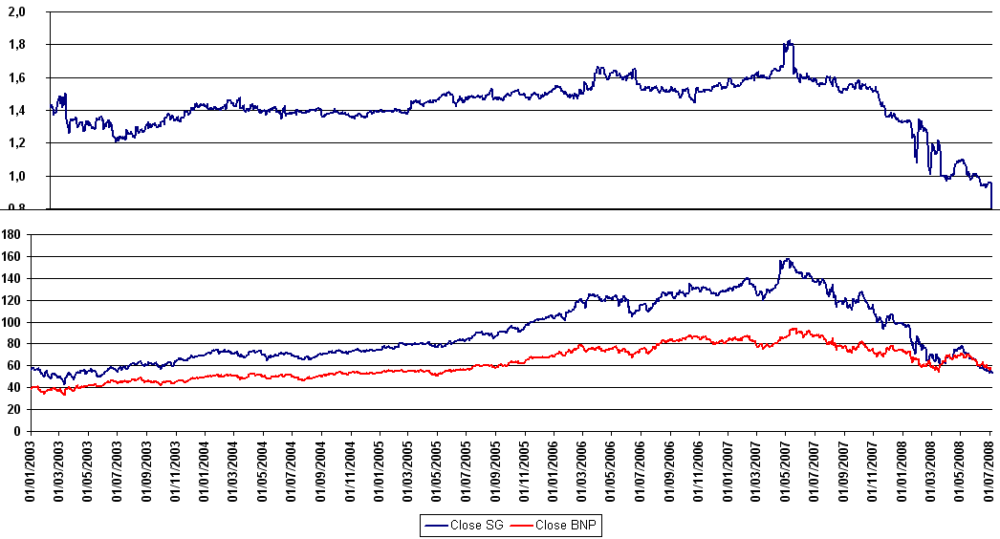Rapport entre l’action Société Générale et l’action BNP. On observe une croissance supérieure pour la Société Générale jusqu’en août 2007 date du début de la crise des subprimes puis une nette dégradation depuis l’affaire Kerviel en janvier 2008. Auparavant, la série du rapport paraît plus stable et il semble plus judicieux de faire du mean reversing.
Styles, Value, Growth#
Le pair trading permet de prendre des paris sur une paires d’actions, une stratégie construite à partir de style propose une façon de jouer simultanément avec beaucoup d’actions. Elle utilise des indicateurs qui décrivent la santé financière d’une entreprise, ils sont généralement calculés à partir des bilans financiers que les sociétés cotées sont obligées de produire régulièrement. On distingue souvent deux classes de stratégies, les growth et les value. Les indicateurs servent à estimer si pour une compagnie, il est préférable de suivre une stratégie plutôt textit{growth} ou plutôt textit{value}.
Une société growth affiche un fort taux de croissance. Le prix de l’action est élevé mais les perspectives de croissance suggère une hausse. Il est intéressant dans ce cas d’acheter le stock. Une société value est plutôt estimée à son juste prix et les perspectives de hausse de cours de l’action sont faibles, il dans ce cas préférable d’attendre une baisse du cours avant d’acheter.
La liste suivante regroupe quelques indicateurs très utilisés pour étudier les sociétés cotées en bourse. Il existe plus d’une centaine d’indicateurs que les acteurs des marchés financiers suivent. Pour chacun d’entre eux, il faut savoir ce qu’est une bonne valeur, une mauvaise, quelle décision (acheter ou vendre) il faut prendre lorsque l’indicateur est élevé.
Earnings before Interest, Taxes, Depreciation, and Amortization (EBITDA), revenus avant Intérêts, impôts (Taxes), Dotations aux Amortissements et provisions
Earnings Per Share (EPS) : , c’est le bénéfice d’une entreprise rapporté aux nombres de parts ou d’action,
Price to Sales (P/S) : , Capitalisation boursière rapportée au chiffre d’affaires
Dividend Payout Ratio (DPR) : , Dividende d’une action divisé par EPS
Price to Earnings Ratio (P/E) : ou , Prix d’une action divisé par EPS ou aussi le prix d’une action divisé par le dividende
Un indice P/E élevé indique un petit dividende comparé au prix de l’action, il est donc préférable de ne pas acheter. Il n’est pas toujours facile de savoir ce qu’est une valeur intéressante pour un indicateur mais on peut supposer que pour un secteur économique donné, il existe au moins une société dont l’indicateur est intéressant. A la date $t$, en classant par ordre croissant tous les indicateurs d’un même secteur économique, on peut supposer que les indicateurs extrêmes correspondent à des sociétés intéressantes.
Par exemple, supposons qu’au début de chaque mois, c’est à dire à la
date , on dispose d’une nouvelle valeur de l’indicateur
pour la société  .
On les trie par ordre croissant : .
Pour cet indicateur, une petite valeur suggère une position
acheteuse. Par conséquent, on va prendre une position acheteuse
pour les premiers 10% et une position vendeuse pour les derniers 10%.
.
On les trie par ordre croissant : .
Pour cet indicateur, une petite valeur suggère une position
acheteuse. Par conséquent, on va prendre une position acheteuse
pour les premiers 10% et une position vendeuse pour les derniers 10%.
société |
position |
|---|---|
acheteuse |
|
… |
acheteuse |
acheteuse |
|
… |
|
|
|
vendeuse |
|
… |
vendeuse |
vendeuse |

Le mois d’après, le classement a changé, quatre cas sont possibles :
La société reçoit un classement équivalent et sa position ne change pas.
La société n’apparaît plus dans les extrémités du classement, sa position est coupée.
La société apparaît dans les extrémités du classement, on prend une position.
La société passe d’une extrémité à une autre, on retourne la position.
Cette étape qui consiste tous les mois à conserver, couper, prendre ou retourner une position est souvent appelée rebalancing. Il est préférable de n’utiliser cette méthode que sur des sociétés appartenant au même secteur économique, dans le cas contraire, classer les indicateurs par ordre croissant peut ne pas être pertinent.
Ce type de stratégie suppose le choix d’un indicateur ou d’une combinaison d’indicateurs. Le choix est souvent guidé par des raisons économiques et aussi l’utilisation de backtest.
Ce n’est pas toujours facile de combiner les sources. Il faut faire attention au sens de chaque indicateur : un P/E faible suggère une position acheteuse, un DPR élevé suggère aussi une position acheteuse. Il est aussi difficile de combiner linéairement des indicateurs qui ont des ordres de grandeur différents. Une combinaison simple qui contourne ce problème est de combiner le rang des sociétés obtenus en les classant selon chaque indicateur de la combinaison. Par exemple, on classe les sociétés selon et , les rangs obtenus sont additionnés et c’est le rang final qui servira à sélectionner les sociétés.
Gestion de portefeuille#
Un nom est incontestablement associé à ce thème qu’est la gestion de portefeuille, c’est l’économiste Harry Markowitz qui reçut le prix Nobel d’économie pour ses travaux en 1990. L’idée repose sur la construction d’un portefeuille d’action qui permet d’obtenir un rendement donné avec un risque moindre comparé à celui de chaque action prise séparément.
Chaque action est ici décrit par son rendement moyen et sa volatilité  .
Construire un portefeuille consiste à répartir son argent entre les différents
actifs financiers. On affecte un poids à chaque action .
La somme des poids vérifie les contraintes suivantes :
.
Construire un portefeuille consiste à répartir son argent entre les différents
actifs financiers. On affecte un poids à chaque action .
La somme des poids vérifie les contraintes suivantes :
Le rendement moyen du portefeuille est défini par :
Si on note la corrélation entre les deux
actions et , le risque ou la volatilité du portefeuille
est définie par :
Si on note  la matrice des covariances des sous-jacents et
la matrice des covariances des sous-jacents et
 les poids du portefeuille ( sa transposée),
la variance du portefeuille s’exprime :
les poids du portefeuille ( sa transposée),
la variance du portefeuille s’exprime :
La construction du portefeuille optimal passe par l’optimisation sous contrainte d’un des deux problèmes suivant :
Problème P1 : optimisation d’un portefeuille
Version 1 : minimisation du risque sous contrainte de rendement
Version 2 : maximisation du rendement sous contraine de risque
Lorsque les exigences sur le rendement minimal ou la volatilité maximale
 ne sont pas trop fortes, la solution mène à des poids
situés dans l’intervalle .
Il se peut qu’il n’y ait pas de solution, dans ce cas,
il faudra assouplir la contrainte sur le rendement minimal
ou la volatilité maximale. Dans tous les cas, ces problèmes se
résolvent grâce à la méthode des multiplicateurs de Lagrange.
Ce problème est un problème d’optimisation convexe avec des
contraintes convexes. Il existe d’autres méthodes de résolution
comme la programmation séquentielle quadratique,
l’algorithme du gradient projeté avec contraintes d’inéglité,
ou plus récemment Stephen Boyd
avec les ADMM
([Boyd2012],
Distributed Optimization and Statistical Learning via the Alternating Direction Method of Multipliers,
logiciel CVXGEN).
ne sont pas trop fortes, la solution mène à des poids
situés dans l’intervalle .
Il se peut qu’il n’y ait pas de solution, dans ce cas,
il faudra assouplir la contrainte sur le rendement minimal
ou la volatilité maximale. Dans tous les cas, ces problèmes se
résolvent grâce à la méthode des multiplicateurs de Lagrange.
Ce problème est un problème d’optimisation convexe avec des
contraintes convexes. Il existe d’autres méthodes de résolution
comme la programmation séquentielle quadratique,
l’algorithme du gradient projeté avec contraintes d’inéglité,
ou plus récemment Stephen Boyd
avec les ADMM
([Boyd2012],
Distributed Optimization and Statistical Learning via the Alternating Direction Method of Multipliers,
logiciel CVXGEN).
Si les positions vendeuses sont acceptées alors la contrainte sur les poids devient . Pour une stratégie Equity Market Neutral, on ajoute une contrainte supplémentaire qui correspond à l’exigence d’avoir autant de positions vendeuses qu’acheteuses : où est le prix de chaque actif.
On a supposé que le portefeuille était un portefeuille d’actions mais dans la mesure où ce dernier est défini par un ensemble de poids affectés à des objets décrits par leur rendement et leur volatilité, la méthode s’applique à n’importe quel actif financier. La méthode de Markowitz revient à répartir intelligemment son argent entre les différentes stratégies de trading.
Horizon de trading, intraday, daily#
Il ne paraît pas plus compliqué d’appliquer ces stratégies au trading intraday qu’au trading daily. Dans le second cas, les positions sont tenues plusieurs jours, plusieurs mois et on s’intéresse peu aux variations dans une même journée. Dans le premier cas, on s’intéresse plus particulièrement aux variations qui ont lieu dans une même journée et qui peuvent être importantes. Le prix de clôture peut être équivalent au prix d’ouverture alors que les prix ont montré des variations de 1% ou 2% au cours de la journée.
Les séries financières, les indicateurs s’expriment de la même façon que la période soit de un jour ou de cinq minutes. En pratique, certaines contraintes font que le trading intraday est plus complexe à mettre en oe uvre. Le premier obstacle est informatique : stocker des prix toutes les cinq minutes est autrement plus coûteux que de stocker un prix par jour. Les temps de calcul sont également plus longs. Pour des données tick by tick, il vaut mieux être épaulé par un informaticien chevronné. Le second obstacle est statistique : il faut contrôler les données en trading intraday. Il n’est pas rare de manquer de données pendant 15 minutes puis d’obtenir des volumes de transactions quatre fois plus important pour les cinq minutes suivantes. Ceci est illustré par l’exemple suivant :
date |
time |
Open |
High |
Low |
Close |
Volume |
Remarque |
|---|---|---|---|---|---|---|---|
07/11/2007 |
19:42 |
7822 |
7823 |
7818 |
7819.5 |
1130 |
|
07/11/2007 |
19:48 |
7819.5 |
7830 |
7819.5 |
7822.5 |
1543 |
|
07/11/2007 |
19:54 |
7823 |
7827.5 |
7819.5 |
7824 |
1244 |
|
07/11/2007 |
20:00 |
7824 |
7825.5 |
7822.5 |
7824.5 |
216 |
# 20.00 |
07/11/2007 |
20:24 |
7828 |
7833 |
7825.5 |
7830 |
640 |
# 20.24, il manque 3 périodes |
07/11/2007 |
20:30 |
7829.5 |
7831.5 |
7827 |
7829.5 |
478 |
|
07/11/2007 |
20:36 |
7830 |
7830.5 |
7821 |
7829 |
716 |
|
07/11/2007 |
20:42 |
7829.5 |
7834.5 |
7826 |
7828 |
681 |
A l’inverse, il peut arriver qu’aucun ordre n’ait été passé pendant cinq minutes, au tout début de l’ouverture d’un marché, ou durant la nuit sur un marché ouvert 24h/24. Dans ce cas, le volume sera nul et les prix immobiles.
Les périodes d’ouverture et de fermeture des marchés ne sont pas les mêmes d’une année sur l’autre, les bourses ont tendance à rester ouverte de plus en plus tard au fur et à mesure qu’elles s’informatisent. Il faut en tenir compte dans les historiques de données.
En conclusion, la première chose à faire lorsqu’on traite des données financières est de s’assurer qu’elles sont exploitables, qu’il n’y a pas de données manquantes ou incohérentes.
Analyse d’une stratégie#
Cette partie décrit les principales étapes de la mise au point d’une stratégie automatique. Elle sera illustrée avec une stratégie appliquée sur le cours de la BNP de début 2003 à mi-2008. C’est une stratégie Trend Following fonctionnant avec trois paramètres.
La longueur de la moyenne mobile, par défaut jours.
Le coefficient mulitplicatif devant les bandes de Bollinger
.
Par défaut et la largeur des bandes est la distance moyenne de la série
à sa moyenne mobile.Lorsque la stratégie a pris une position acheteuse au prix
,
si le prix redescend en deça de , la position est coupée.
A l’opposé, si la stratégie prend une position vendeuse,
si le prix monte au-dessus de , la position est également coupée.
Par défaut, .
La stratégie est définie par trois règles :
La première règle définit l’ouverture d’une position lorsque la position est nulle. Si le cours d’une action dépasse la bande de Bollinger supérieure, la stratégie entre en position acheteuse, si le cours dépasse la bande de Bollinger inférieure, la stratégie entre en position vendeuse.
La seconde règle est appliquée lorsque le cours franchit à nouveau ses bandes de Bollinger alors que la position n’est plus nulle. Si le cours franchit la bande de Bollinger supérieure et que la position est vendeuse, celle-ci est coupée. Si le cours franchit la bande de Bollinger inférieure et que la position est acheteuse, la position est aussi coupée.
La troisième règle est destinée à limiter les pertes, si la stratégie a ouvert une position acheteuse au prix $p$ et que le cours redescend à un niveau , la position est coupée. A l’inverse, si la stratégie a ouvert une position vendeuse au prix
et que le cours remonte à
un niveau , la position est aussi coupée.
Figure F7 : Le cours de la BNP entre début 2003 et mi 2008
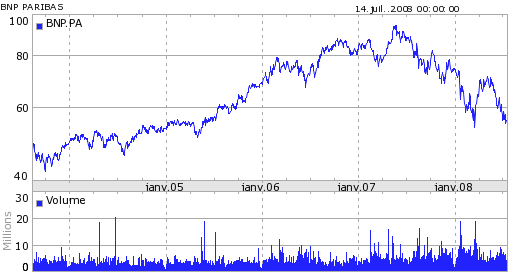Cette stratégie très simple est très inefficace sur de courtes périodes très volatiles alors que le cours de l’action sort des bandes de Bollinger puis revient très rapidement à un niveau où la position est coupé par la seconde règle. Une stratégie réellement utilisée par un Hedge Funds s’appuie sur plus d’une dizaine de règles et autant de paramètres.
Backtest#
| 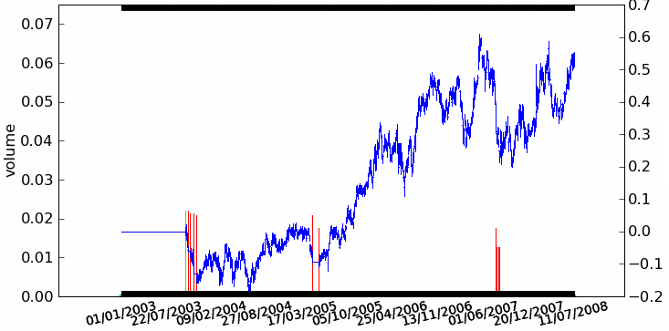 | 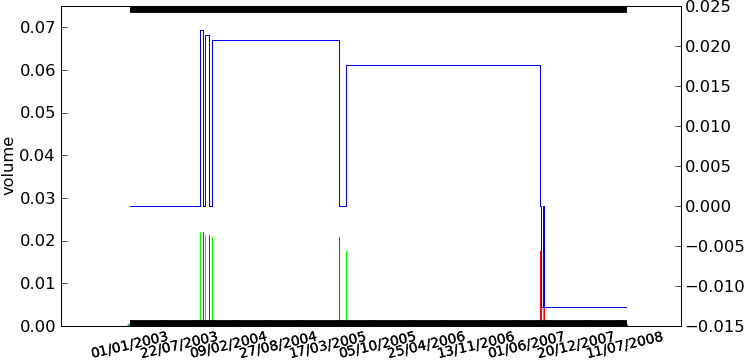 |
NAV de la stratégie Trend Following décrite au paragraphe Analyse d’une stratégie. Le second graphe représente la position de la stratégie, une position positive signifie une position acheteuse (long), une position négative signife une position vendeuse (short). C’est un graphe qui ne représente pas la position mais la quantité d’actions achetées ou vendues pour une position proche de un euros. Ceci explique que cette seconde courbe présente des paliers de hauteurs différentes, il s’agit de l’inverse du prix observé lors de l’ouverture d’une position.}
La validation d’une stratégie passe par son évaluation sur le passé de l’action sur laquelle on souhaite l’appliquer. On appelle cette méthode backtest. Ce passé doit être suffisamment grand : il n’est pas difficile de concevoir une stratégie gagnante sur six mois, sur dix ans c’est moins facile. Toutefois, cette validation a quelques biais :
Il est impossible de valider la stratégie sur des situations probables dans le futur mais absentes du backtest. Ceci signifie que la stratégie est susceptible de mal se comporter pour toute situation imprévue.
Les situations de crises ne sont pas fréquentes : elles sont statistiquement peu significatives. Par conséquent, la stratégie n’est validée que sur des jours de trading « normaux » et c’est dans ces périodes qu’elle fait l’essentiel de ses gains. En temps de crise, son comportement peut décevoir.
L’utilisation de plus en plus grande de l’informatique a tendance à modifier les comportements du marché. Les algorithmes de trading intraday augmente les volumes échangées. L’introduction des stop order peut provoquer des opérations en cascades. Utiliser vingt ans d’historique est sans doute peu pertinent.
Le backtest n’est pas toujours suffisant pour valider une stratégie. Sur un historique de cinq ans, il n’y figure que quelques crises et certainement pas le scénario de la prochaine. C’est pourquoi il faut être vigilant lors de l’utilisation de telles stratégies ou alors lui faire confiance et supposer que l’algorithme se remettra à gagner une fois la crise passée. Il peut être intéressant de valider la stratégie sur d’autres backtest provenant d’actions plus ou moins corrélées à la première. C’est une autre façon d’améliorer la qualité du backtest.
En règle générale, les stratégies sont éprouvées avec un levier de 100% et un investissement de 1 : la position maximale (= la somme des positions acheteuses et vendeuses en valeur absolue) ne doit pas dépasser la somme initiale. Ce principe permet de comparer les stratégies entre elles. D’autres part, utiliser un levier plus ou plus grand modifie certes les rendements et la volatilité mais ne modifie pas leur rapport. Une bonne stratégie est de préférence une stratégie peu volatile, un levier adéquat permettra d’en augmenter le rendement.
Au final, la validation d’une stratégie sur un backtest aboutit à la courbe des gains ou Net Asset Value (NAV), ce sont les gains qui ne tiennent pas compte des frais de gestion, des charges de la société financière. Il est fréquent aussi qu’on parle de NAV non réinvestie, ceci signifie que la position est constante tout le temps du backtest même si en réalité, les gains sont réinvestis.
On observe souvent que la recherche de la meilleure stratégie sur un backtest donne des résultats nettement supérieure à ceux que la stratégie obtient lorsqu’elle est vraiment utilisée. Ceci signifie aussi que la stratégie est parfaite sur le passé : elle est trop bien ajustée. Cee écueil est quasiment inévitable, il est très difficile de savoir si une stratégie est trop performante sur le passé et risque de ne plus l’être après.
Lors de la simulation d’une stratégie sur un backtest, il peut arriver que plusieurs ordres soient passés durant la même journée. Il est impossible de savoir dans quel ordre ceux-ci doivent être passés car seules quatre prix sont connus au cours de cette période. Il n’est pas possible de savoir si la valeur maximale a été atteinte avant la valeur minimale par exemple. On suppose malgré tout que ce genre de situation a peu d’impact sur le résultat final. S’il survient de façon trop fréquente, alors il serait sans doute avisé d’en tenir compte lors de l’attribution de valeurs aux coûts de transactions et au slippage définis ci-dessous.
Modélisation#
Pour améliorer la validation des stratégies sur un backtest, on intègre dans le
modèle deux défauts qui surviennent lors des passages d’ordres.
Même utilisée sur des marchés liquides, si la stratégie impose un achat
d’action à un prix donné , il y a toujours un décalage entre le temps
où le prix dépasse ce niveau et celui où l’ordre est passé.
Ce décalage ou slippage
peut être dans un sens ou dans l’autre mais par principe,
ce décalage sera toujours supposé être en défaveur de la stratégie.
Le slippage est souvent exprimé en nombre de ticks. En effet, le prix de tout produit côté n’est pas continu, il évolue de tick en tick. Le tick est une fraction de l’action et dépend de chaque action. Une action de 5 euros aura un tick faible, le tick d’une action de 1000 euros sera plus élevé. Un bon ordre de grandeur pour le slippage est de quelques ticks.
Passer des ordres a un coût, de quelques pourcents du prix de l’action pour un particulier, de quelques dizième de pourcents pour un Hedge Fund. Une stratégie performante mais qui beaucoup d’ordres gagnera moins d’argent. Ce sont des paramètres qu’il ne faut pas négliger pour des stratégies Mean Reversing qui cherchent à profiter d’une forte volatilité grâce à de fréquents passages d’ordres. Il faut prendre en compte ce qu’on appelle les coûts de transaction .
Ces deux défauts peuvent être mesurés une fois que la stratégie est mise en place. Néanmoins, il est préférable de les surestimer pour tenir compte du fait qu’une fois validée sur backtest, la stratégie sera toujours utilisée sur des données nouvelles. Certains Hedge Funds donnent à ces paramètres non pas les valeurs qu’ils observent en pratique mais des valeurs plus fortes qui leur permettent de faire décroître les performances des backtests jusqu’aux performances réellement observées.
Le slippage est ici modélisé comme une constante mais il serait sans
doute plus judicieux de l’ajuster en fonction d’une variabilité locale
(par rapport à la différence High - Low) qui pourrait pénaliser davantage
la stratégie en temps de crise. Par exemple, lors de la vente d’une action
au prix , on considèrera le prix .
est le coût de transaction est proportionnelle au prix,
est le slippage qui s’exprime en un multiple
entier du tick (donc différent pour chaque action).
Résultats standards#
Même si le rendement d’une stratégie est le résultat important, il faut aussi regarder comment il est obtenu. C’est pour cela qu’on regarde d’autres indicateurs comme l”Information Ratio ou le ratio de Sharpe. La première étape consiste à annualiser la performance et la volatilité obtenus sur le backtest (voir paragraphe ref{finance_rendemnt_annee}). On cherche ensuite à construire le tableau suivant qui n’est pas exhaustif.
Indicateur |
Description |
|---|---|
Information Ratio |
C’est le rendement rapporté sur la volatilité . mesure la performance, le risque pour l’obtenir. Si ce ratio est inférieur à 1, cela signifie que le risque est plus élevé que la performance qui est sujette à caution même si elle est importante. |
ratio de Sharpe |
Les Hedge Funds partiquent souvent un levier supérieur à 200%. Cela veut dire qu’ils empruntent pour placer le double ou le triple de l’argent qu’ils gèrent. Cet emprunt n’est pas gratuit, c’est pourquoi on retranche à la performance obtenu par le Hedge Fund le taux sans risque $r$ qui correspond au taux de l’emprunt : . |
drawdown |
C’est la perte maximale de la stratégie. Obtenir 10% en fin d’année ne veut pas dire que le système n’est pas passé par -5% en cours d’année. La perte maximale n’est pas le niveau le plus bas depuis le début de l’année, c’est le plus grand écart entre un gain maximal et une perte maximale qui lui succède. |
rendement roulant |
Lorsqu’on construit une stratégie à long terme, il peut être intéressant de construire la courbe des rendements roulant qui est par exemple pour une date , la performance obtenue entre mois et par exemple. Pour une stratégie à long terme, il devrait exister très peu de rendements roulant à un an négatifs. |
corrélation |
Lorsqu’un investisseur cherche à investir son argent dans un placement alternatif, il regarde si ce placement lui offre des rendements qui ne sont pas corrélés au marché. Dans le cas d’une stratégie appliquée à une action, il s’agit de calculer la corrélation entre le cours de l’action et la NAV de la stratégie. Une corrélation de 1 ou -1 signifie que la stratégie a été d’acheter ou de vendre une action puis de conserver cette position. Il est intéressant d’avoir une corrélation faible, d’avoir une stratégie qui ne reproduisent pas les pertes et les gains d’une action. C’est aussi avoir de la valeur ajoutée : la stratégie atteint son objectif, elle propose un placement alternatif. |
Il existe de nombreuses manières de mesurer la performance d’une stratégie. D’autres critères peuvent être mesurés comme le nombre d’ordres passés, la VAR (Value At Risk) qui mesure les pertes maximales quotidiennes. Cela dépend de la stratégie et des écueils qu’on la souhaite la voir éviter.
Pour calculer la VAR, on considère les rendements de l’année écoulée qu’on trie par ordre croissant. On considère que les plus grandes pertes représentent ce que la stratégie peut perdre au pire le lendemain. Ce calcul est appelé VAR historique.
Il est également intéressant de se pencher sur les plus mauvais jours comme les meilleurs jours de la stratégie obtenus sur le backtest. Leur étude fournit en général des informations importantes sur son comportement en temps de crise. Le tableau suivant présente les résultats pour la stratégie décrite au paragraphe Analyse d’une stratégie.
Indicateur |
Valeur |
|---|---|
rendement annualisé |
7,7% |
volatilité annualisée |
8,5% |
Information Ratio |
0.88 |
ratio de Sharpe |
0.42 |
corrélation |
82,6% |
drawdown |
24,4% |
La stratégie est ici peu efficace. La volatilité est élevée, le drawdown maximal est très élevé.
Variation de paramètres#
Une stratégie dépend de paramètres. Un trend following simple dépend de la longueur de la moyenne mobile (20, 200 jours) et de l’écart entre les bandes de Bollinger. On peut se poser la question de savoir si la stratégie est sensible ou non à la modification d’un paramètre. Etant donné que les stratégies sont testées sur un backtest, les paramètres sont ajustés en fonction de ce backtest, une stratégie sensible à un paramètre signifie qu’un backtest un peu différent aura vraisemblement des répercussions importantes sur la performance de la stratégie.
Dans le cas de notre stratégie, on a fait varier les trois paramètres et mesurer le rendement et la volatilité pour chaque expérience. Ceci aboutit aux graphes de la figure suivante.
| 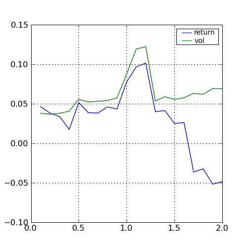 | ||
|
Variations selon les trois paramètres , , .
Le pic obtenu pour la valeur est très localisé
autour de cette valeur, il faut s’attendre à ce que la stratégie obtienne des résultats très différents
sur des séries similaires. La courbe pour $beta$ est stable, on choisira une valeur dans cette zone.
Les rendements passent du simple au double en fonction de la largeur
des bandes de Bollinger. Ces graphes ne montrent que l’évolution des rendements et de la volatilité,
ils pourraient aussi montrer l’évolution des drawdowns ou du ratio de Sharpe.
Autres séries financières de même nature#
Il existe nécessairement d’autres séries financières corrélées avec celles du backtest. Si le backtest est le cours de l’action d’une banque, il faut tester la stratégie sur l’action d’une autre banque pour vérifier qu’elle a le même comportement sur une série fortement corrélée. Ceci permet de confirmer la robustesse de la stratégie.
A l’inverse, il est également souhaitable de tester la stratégie sur des séries financières décorrélées, issues de secteurs économiques différents. Deux conclusions sont possibles, soit la stratégie est encore positive auquel cas elle est très robuste, soit la stratégie présente des résultats négatifs qui permettront peut-être d’appréhender les limites de l’algorithme et de pouvoir identifier des scénari dans lesquels la stratégie ne produira pas de bons résultats.
La figure suivante montre les cours de trois banques, la BNP, la Société Générale, le Crédit Agricole et une série issue d’un autre secteur Danone.
Figure F10 : 4 actions françaises
BNP |
Société Générale |
| 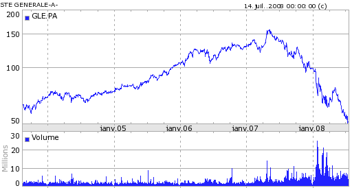 | |
| 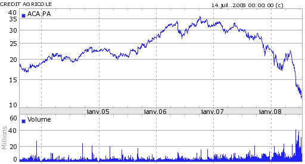 | 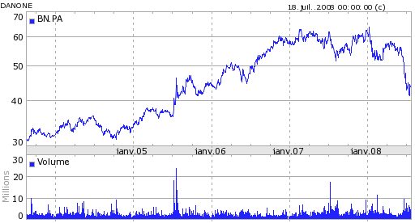 |
Crédit Agricole |
Danone |
Quatre actions, trois banquaires (BNP, Société Générale, Crédit Agricole) et une société issue de l’alimentaire Danone.
La table suivante contient la matrice des autocorrélations.
Table T2 : Indicateurs BNP, Crédit Agricole, Danone, Société Générale
BNP |
1,00 |
0,75 |
0,67 |
0,44 |
SG |
0,75 |
1,00 |
0,63 |
0,42 |
CA |
0,67 |
0,63 |
1,00 |
0,35 |
Danone |
0,44 |
0,42 |
0,35 |
1,00 |
Matrice des autocorrélations pour les rendements quotidiens des quatre actions BNP, Société Générale, Crédit Agricole et Danone. Les corrélations sont moins fortes entre Danone et une banque qu’entre banques. Bien que les données quotidiennes soient beaucoup plus propres que des données intraday, il faut quand même vérifier que les séries sont homogènes et contiennent les mêmes dates avant de calculer les corrélations sur les rendements.
Enfin, la dernière figure montre les résultats de la stratégie sur chacune des quatre séries.
Figure F11 : Rendement pour 4 actions françaises
BNP |
Société Générale |
| 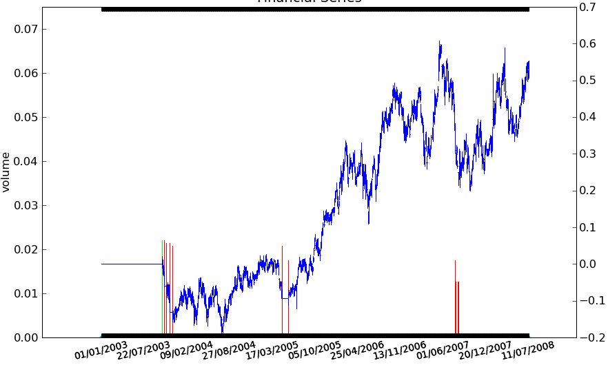 | 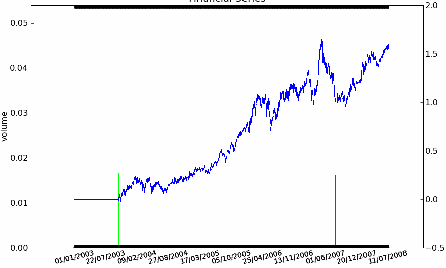 |
| 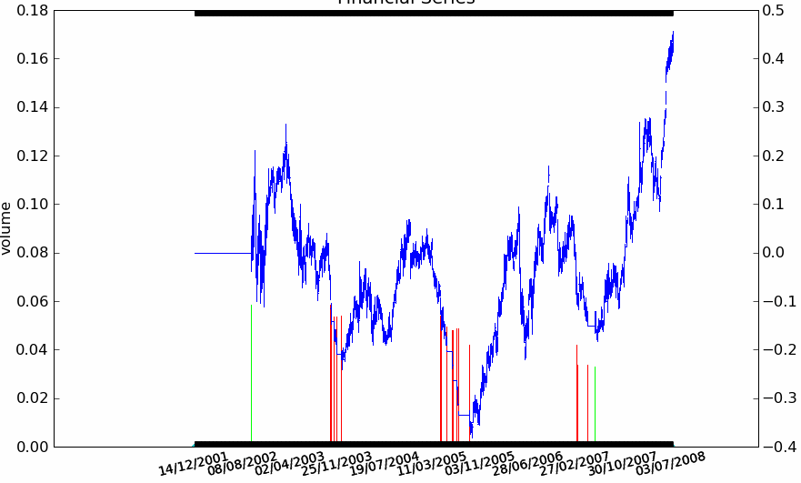 | 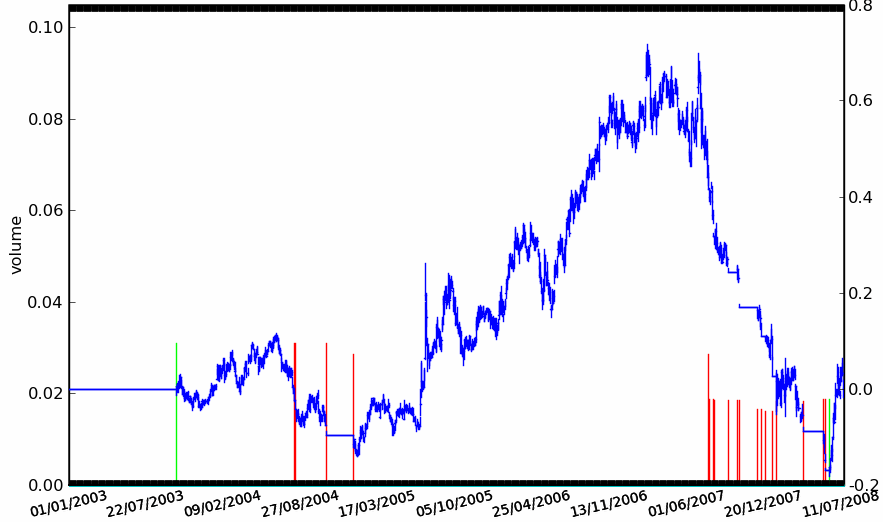 |
Crédit Agricole |
Danone |
La stratégie Trend Following est appliquée aux quatre séries avec des résultats mitigés. Elle réagit bien sur la BNP et la Société Générale, elle donne de mauvais résultats sur le Crédit Agricole. Sur Danone, la stratégie conserve une position acheteuse puis perd tout ce qu’elle avait gagné par la suite alors que la série n’a plus de trend aussi évident et que sa volatilité est élevée. La série du Crédit Agricole est plus longue de deux ans mais cela n’explique pas ses mauvais résultats, la stratégie prend une série de mauvaises décisions ce qui tend à montrer qu’elle n’est pas suffisamment robuste.}
Il est très peu probable qu’une stratégie soit efficace sur chaque action mais il est souhaitable qu’elle soit positive sur des séries corrélées et qu’elle limite les pertes sur les autres séries financières.
Décomposition en deals#
Ce procédé permet parfois de découvrir le style d’une stratégie ou de mesurer la pertinence de l’algorithme lorsqu’il coupe sa pose. Un deal est le fait d’ouvrir puis de fermer une position. Un deal est donc défini par :
une date d’ouverture de la position

une date de fermeture de la position

la quantité
 (positive si on a acheté, négative si on a vendu)
(positive si on a acheté, négative si on a vendu)le prix d’ouverture
le prix de fermeture
Figure F12 : Deal
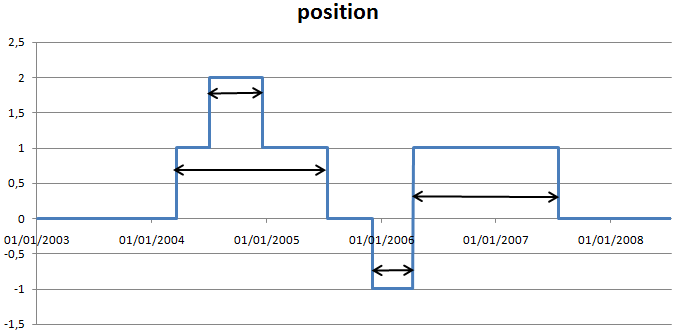Les deals sont construits à partir de la position de la stratégie. Chaque flèche à double sens désigne un deal Lorsqu’un ordre d’achat est passé alors que la position est déjà positive, on décompose en deal dont les temps de vie se superposent.
Ces informations permettent de calculer le gain associé au deal : . Si on note un deal comme un 5-uplet , le gain de la stratégie sur l’ensemble du backtest devient : . Cette décomposition s’inspire de l’article [Potters2005] qui étudie la répartition des gains d’une stratégie Trend Following, elle présente des caractéristiques qui la différencie d’autres stratégies. Un Trend Following se reconnaît car il aboutit à un grand nombre de petits deals négatifs et quelques gros deals positifs.
Figure F13 : Deal en image
| 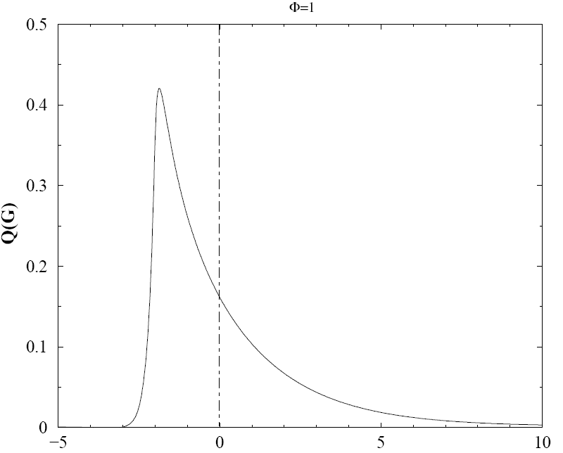 | 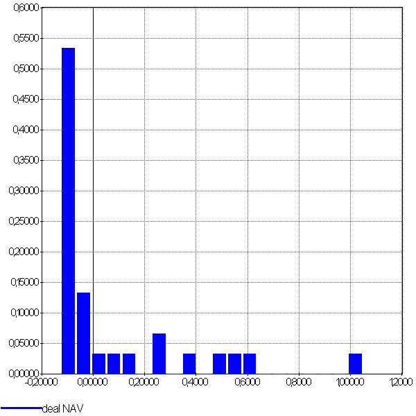 | 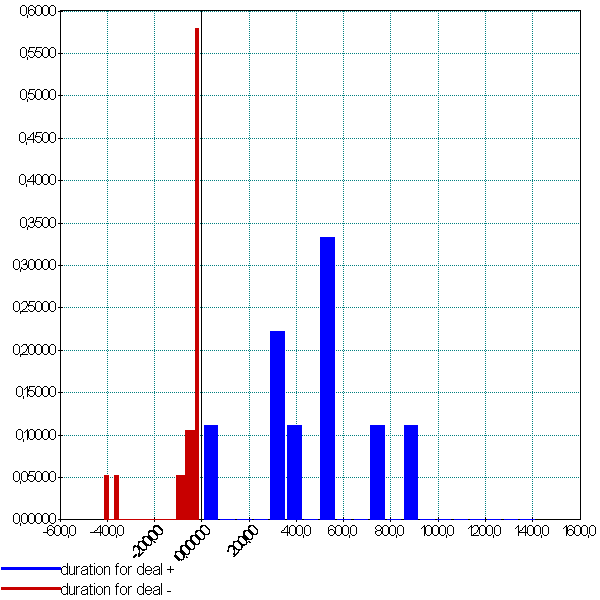 |
La première image est celle de la distribution théorique des gains calculée par Bouchaud et Potters dans leur article [Potters2005]. La distribution empirique n’est pas toujours facile à construire sur des historiques qui ne sont pas assez longs : dans le cas de notre stratégie Trend Following, il n’existe que cinq deals. Il faut donc assembler les deals de la même stratégie sur plusieurs séries. Le résultat correspond assez bien à la distribution théorique. Le troisème graphe représente la distribution des durées des deals exprimées en jours (axe des abscisses). Les deals négatifs sont nombreux et de courtes durées.
On peut s’interroger sur le cas d’une stratégie exclusivement Trend Following dont la distribution des deals sur backtest est différente de ce profil décrit par la figure précédente. Ses paramètres pourraient avoir été trop bien calculés pour s’ajuster au backtest, ceci implique que cette stratégie aurait sans doute plus de mal à reproduire des rendements équivalents sur des données futures. On peut envisager cette distribution comme un test statistique.
Le second intérêt de la décomposition en deals est le calcul de la perte et du gain maximale que la stratégie aurait pu observer en coupant plus tôt sa position. On définit le prix maximal observé dans la période et le prix minimal observé dans la même période. Pour chaque deal long (position positive), ces deux prix vérifient l’inégalité :

Le graphe permet de représenter l’écart entre le gain et le gain maximal qu’on aurait pu obtenir sur chaque deal long. Un deal short (position négative), on s’intéresse à l’ensemble des points .
Figure F14 : Deal positifs, négatifs, logns, courts
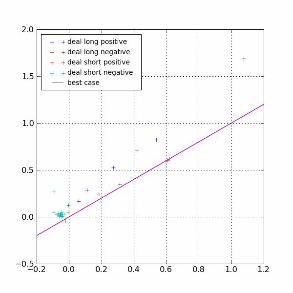{kind=link}
Dans ce graphe, pour un deal positif, plus il est proche de la diagonale, plus la décision de coupure de la position a été proche du maximum envisageable. Dans ce graphe, on voit que la stratégie est meilleure lorsqu’elle coupe une position vendeuse plutôt qu’acheteuse. Il faudrait sans doute pour l’améliorer tenir compte du signe de la position avant de couper même si cette conclusion est osée étant donné le peu de deals short positifs.
Pour aller plus loin#
Sur des stratégies Trend Following, le passé d’une action ne suffit pas à tester une stratégie : moins d’une dizaine d’ordres vont être exécutés. La première solution est de tester cette stratégie sur plus de séries similaires. La seconde solution est plus ambitieuse car elle suppose l’altération de la série initiale.
Le premier objectif est de créer une série proche mais suffisamment différente pour tester la robustesse de la stratégie. On peut par exemple construire une seconde série où chaque rendement quotidien sera tiré aléatoirement parmi les cinq derniers rendements quotidiens. Le second objectif est d’ajouter à la série des scénarios de crises. On peut soit s’inspirer des crises déjà présentes ou créer artificiellement des scénarios volontairement exagérés de façon à tester la stratégie dans des cas extrêmes.
Bruiter les séries financières est un projet ambitieux en terme de conception et de temps de calcul. Certaines directions de recherches visent à modéliser les acteurs des marchés financiers pour reproduire artificiellement le fonctionnement d’une salle des marchés et ses crises. Cette voie est plus proche de l’intelligence artificielle, des sytèmes multi-agents ou de la microéconomie que de la finance elle-même.
Diversification#
Gagner de l’argent à partir d’une seule stratégie et d’une seule action est beaucoup trop risqué. Il faut constuire un portefeuille afin de réduire les risques. Ce portefeuille n’est plus simplement composé d’actions mais de couples action - stratégie qui sont décrits par un rendement et une volatilité.
L’objectif reste le même que celui présenté au paragraphe Gestion de portefeuille et sa résolution est identique également. L’intérêt de combiner des actions de secteurs économiques différents est toujours de composer un portefeuille d’actions qui ne soient pas trop corrélées afin d’éviter que toutes les actions montent ou baissent en même temps.
Une stratégie n’est jamais performante tout le temps, l’intérêt de combiner des stratégies différentes sur la même action est de pouvoir compenser la perte d’un algorithme par le gain d’un autre. Autrement dit, la combinaison de plusieurs stratégies ne sera pas forcément plus rentable mais aura tendance à faire diminuer la volatilité.
Conclusion#
Ce document présente quelques concepts qui permettent de mieux appréhender la conception d’un algorithme automatique de trading. Ils suppléent de plus en plus les traders et comme ils accélèrent la vitesse des échanges, il devient difficile de s’en passer. Les stratégies présentées ne sont pas assez évoluées pour être performantes, il serait préférable de se tourner vers des techniques issues du machine learning. En règle générale, si une stratégie est connue, c’est qu’elle ne fonctionne plus.
Il faut retenir que ces techniques, de par la manière dont elles sont construites, capturent un fonctionnement normal des séries et sont plus ou moins imprévisibles en temps de crise. Plus elles sont rapides, plus il est essentiel de les tester en profondeur. Il ne faut pas choisir des paramètres qui maximisent seulement leur rendement, il est préférable d’intégrer une notion de risque dans le critère à optimiser car construire un tel algorithme revient à résoudre un problème d’optimisation.
An ADMM Algorithm for a Class of Total Variation Regularized Estimation Problems ? (2012) B. Wahlberg, S. Boyd, M. Annergren, and Y. Wang, Proceedings 16th IFAC Symposium on System Identification, 16(1), July 2012.
Hedge Funds (2008), Gérard-Marie Henry, Eyrolles
Options futures et autres actifs dérivés, John Hull, Pearson Education
Hedge funds, private equity, marchés financiers les frères ennemis ? (2008) Bertrand Jacquillat, PUF
Trend followers lose more often than they gain (2005), Marc Potters, Jean-Philippe Bouchaud, Référencé depuis le site EconPapers, accessible à l’adresse arxiv
Hedge Funds, tome 1, Histoire de la gestion alternative et de ses techniques (2007) Jean-Michel Rocchi, Arnaud Christiaens, Séfi Editions
La finance quantitative en 50 questions (2008) Paul Willmott, Edition d’Organisation